The Gauss-Wilson theorem
Let us ask: is there a composite analogue of the earlier Wilson's theorem:
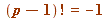 (mod  )
)
Meaning: is there anything of interest that may be said about the value  (mod ) for composite values of
(mod ) for composite values of  ?
?
There is of course a completely trivial analogue:
| > | L := []: for n from 2 to 40 do if isprime(n) = false then
L := [op(L), n]: fi od: print(``); print(array([ ['n', ``, ``, '(n-1)!', ``, ``, 'residue'], seq([n, ``, ``, (n-1)!, ``, ``,(n-1)! mod n], n = L)])): print(``); lprint(`The final column show the LEAST ABSOLUTE residue of (n-1)! mod n.`); |
| 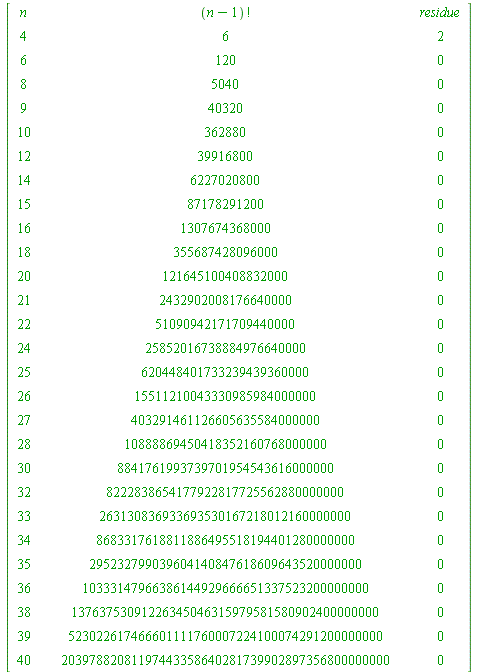 | |
| `The final column show the LEAST ABSOLUTE
residue of (n-1)! mod n.` |
| > |
and I leave it to you to establish this elementary result:
- if
 is composite then - with the sole exception of - then
is composite then - with the sole exception of - then
Of course it is easy to see why this triviality is occurring.
This, now, is what Gauss did (and included in his monumental DISQUISITIONES ARITHMETICAE of 1801):
DEFINE (our notation, and our notation and terminology, not Gauss', who didn't make a notation nor term for this:
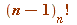
(the 'Gauss factorial of with respect to  ')
')
to be the product of all residues in the interval [] that are relatively prime (the standard terminology) to .
'relatively prime to  ' means simply that they do not share a common prime factor.
' means simply that they do not share a common prime factor.
Example. If we choose 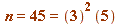 then the Gauss factorial of 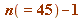 with respect to
would be the product of all those whole numbers between 1 and 44 that are not divisible by a 3 or a 5:
So, let's start with all the integers between 1 and 44:
| > | print(``);
L44 := [seq(k, k = 1..44)]; |
| 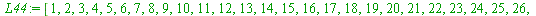 |
(5.5.1) |
| > | [1, 2, 3, 4, 5, 6, 7, 8, 9, 10, 11, 12, 13, 14, 15, 16, 17, 18, 19, 20, 21, 22, 23, 24, 25, 26, 27, 28, 29, 30, 31, 32, 33, 34, 35, 36, 37, 38, 39, 40, 41, 42, 43, 44] |
First I highlight all those divisible by 3:
1, 2, 3, 4, 5, 6, 7, 8, 9, 10, 11, 12, 13, 14, 15,
16, 17, 18, 19, 20, 21, 22, 23, 24, 25, 26, 27, 28, 29, 30,
31, 32, 33, 34, 35, 36, 37, 38, 39, 40, 41, 42, 43, 44
Now I remove those, and of those which remain I further highlight those divisible by 5:
1, 2, 4, 5, 7, 8, 10, 11, 13, 14,
16, 17, 19, 20, 22, 23, 25, 26, 28, 29,
31, 32, 34, 35, 37, 38, 40, 41, 43, 44
and then remove those, leaving, in the process, precisely those residues between 1 and 44 that are 'relatively prime' to 45:
1, 2, 4, 7, 8, 11, 13, 14,
16, 17, 19, 20, 22, 23, 26, 28, 29,
31, 32, 34, 37, 38, 41, 43, 44
Here they are in a list:
| > | n := 45:
LL||(n-1) := []: for k to (n-1) do if igcd(n, k) = 1 then LL||(n-1) := [op(LL||(n-1)), k]: fi od: print(``); LL||(n-1); |
| (5.5.2) |
| > | nops(LL||(n-1)); |
| 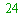 | (5.5.3) |
The product, then, of those (24, as it happens) residues is the Gauss factorial of with respect to
That '24' is known as the 'Euler phi-value of 45' (notation ).
Note. There is a beautiful formula - due to Euler - for : let be factored into its (unique, a fundamental theorem) prime decomposition
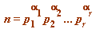
distinct primes 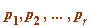 and positive powers 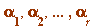, then
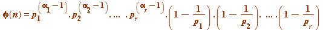
| > | L := []: for n from 2 to 40 do if isprime(n) = false then
r := 1: for k from 2 to (n-1) do if igcd(n, k) = 1 then r := r*k fi od: R||n := r: L := [op(L), n]: fi od: print(``); print(array([ ['n', ``, ``, '(n-1)[n]!', ``, ``, 'residue'], seq([n, ``, ``, R||n, ``, ``,PI(n, 1, 1)], n = L)])): print(``); lprint(`The final column show the LEAST ABSOLUTE residue of GAUSS FACTORIAL (n-1)[n]! mod n.`); |
| 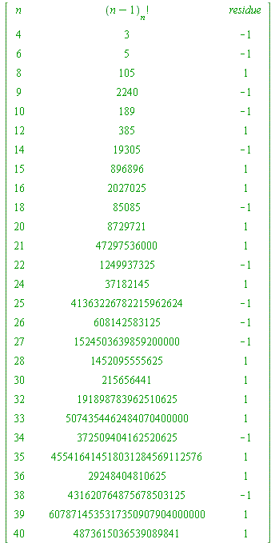 | |
| `The final column show the LEAST ABSOLUTE
residue of GAUSS FACTORIAL (n-1)[n]! mod n.` |
| > |
The Gauss-Wilson Theorem (discoverable by anyone) is this:
For any integer  (prime or composite) we have:
(prime or composite) we have:
- if and only if or 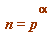 or 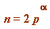, for an odd prime

- otherwise (of course for 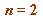 as well)
Aside. Only for do we have both 1 and 2 holding.